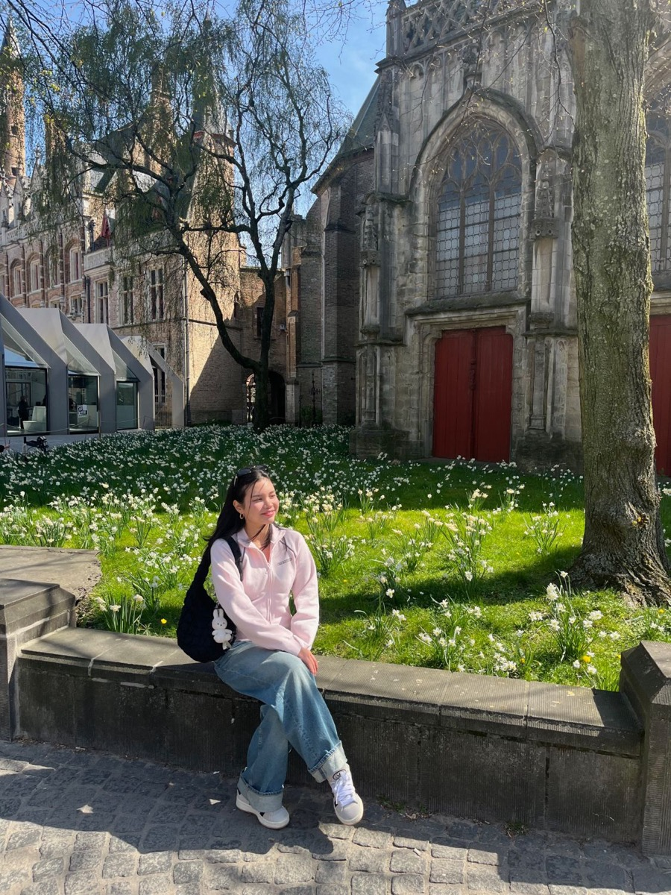

Välkommen till min presentationssida! Här kan du läsa lite om vem jag är och vad jag gör.

Jag är 23 år, halvt filippinsk och halvt svensk, och flyttade till Sverige när jag var 12 år. Just nu bor jag i Växjö, där jag läser programmet Civilingenjör i mjukvaruteknik vid Linnéuniversitetet (LNU).
Vid sidan av studierna jobbar jag deltid på en pub och är dessutom praktikant på ett startup-företag. Trots det tyckte jag att kursen Webbdesign (D0015D) vid Luleå tekniska universitet lät så intressant att jag sökte den ändå, man kan ju aldrig ha för mycket att göra!
Mitt val är markerat i rosa.
| Te ✓ | eller | Kaffe |
| Sommar | eller | Vinter ✓ |
| Sött | eller | Salt ✓ |
| Morgonmänniska | eller | Nattuggla ✓ |